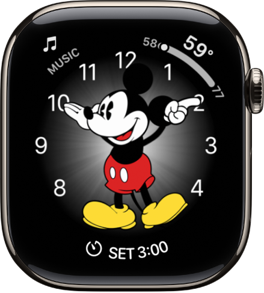

让米奇或米妮为你呈现搞怪的时间视图，它们的手臂旋转来指示小时和分钟，而它们的脚掌每秒钟轻拍一次。
下方的文件数包括本地化资源。固件名称键能确认包的归属；组件的圆屏点击边界、亮屏过渡与 AOD 对照均待设备验证。
原始包 已解析属性表 Mach-O 方法与成员 ARM64 汇编 解出的图集
.strings × 44 .plist × 17 .baf × 15 .car × 1 .metallib × 1 .mtlpipeline × 1 无扩展名 × 1
原始包 已解析属性表 Mach-O 方法与成员 ARM64 汇编 解出的图集
.strings × 44 .plist × 17 .baf × 15 .car × 1 .metallib × 1 .mtlpipeline × 1 无扩展名 × 1
原始包 已解析属性表 Mach-O 方法与成员 ARM64 汇编 解出的图集
.strings × 44 .plist × 12 .baf × 10 .car × 1 .metallib × 1 .mtlpipeline × 1 无扩展名 × 1
NTKCharacterFaceBundle.bundleFACE_STYLE_CHARACTER_1_DESCRIPTIONFACE_STYLE_CHARACTER_0_DESCRIPTIONEDIT_OPTION_LABEL_CHARACTER_MINNIEEDIT_MODE_LABEL_CHARACTEREDIT_OPTION_LABEL_CHARACTER_MICKEY色组与设备条件 Character.color.plist 共享色组与默认值
+[NTKCharacterFace tritium_burnInFaceName];-[NTKCharacterFaceView tritium_createFaceAnimator];-[NTKCharacterFaceView tritium_alwaysOnTimelines];-[NTKCharacterFaceView _prepareWristRaiseAnimation];-[NTKCharacterFaceView _performWristRaiseAnimation];-[NTKCharacterFaceView tritium_timeViews];-[NTKCharacterRenderer _drawArmFromShoulder:toWrist:withBend:withEncoder:];-[NTKCharacterRenderer cleanupOutOfTritium];-[NTKCharacterRenderer prepareForTritiumOffAnimationFromDate:];-[NTKCharacterRenderer prepareToAnimateIntoTritium];-[NTKCharacterRenderer setTritiumBoneDampingMultiplier:];-[NTKCharacterRenderer setTritiumTimeAnimationFraction:];-[NTKCharacterTimeView tritium_didTransitionToTritiumOn];-[NTKCharacterTimeView tritium_didTransitionToTritiumOff];-[NTKCharacterTimeView tritium_transitionToTritiumOnWithProgress:];-[NTKCharacterTimeView tritium_setBoneDampingMultiplier:];-[NTKCharacterTimeView tritium_setCharacterAndGlowBrightness:];-[NTKCharacterTimeView tritium_animationToCurrentDateFromDate:];-[NTKCharacterTimeView _setTritiumProgress:updateHandPositions:goingIntoTritium:];-[NTKCharacterTimeView tritium_transitionToFrameSpecifier:];-[NTKCharacterTimeView tritium_transitionToTritiumOffWithProgress:];-[NTKCharacterTimeView tritium_willTransitionToTritiumOnToFrameSpecifier:];-[NTKCharacterTimeView tritium_setNumbersDimmedFraction:];-[NTKCharacterTimeView tritium_willTransitionToTritiumOffFromFrameSpecifier:];-[NTKCharacterFaceView _startScrubbingAnimated:withCompletion:];-[NTKCharacterFaceView _applyTransitionFraction:fromOption:toOption:forCustomEditMode:slot:];-[NTKCharacterFaceView tritium_createFaceAnimator];-[NTKCharacterFaceView tritium_alwaysOnTimelines];-[NTKCharacterFaceView _applyForegroundAlphaForTransitionFraction:fromEditMode:toEditMode:];-[NTKCharacterFaceView _endScrubbingAnimated:withCompletion:];-[NTKCharacterFaceView _prepareWristRaiseAnimation];-[NTKCharacterFaceView _performWristRaiseAnimation];-[NTKCharacterFaceView _scrubToDate:animated:];-[NTKCharacterFaceView _configureForTransitionFraction:fromEditMode:toEditMode:];-[NTKCharacterFaceView _updateComplicationViewsAlphasWithAnimation:];-[NTKCharacterRenderer setAnimationFrameInterval:];-[NTKCharacterRenderer _drawMinuteHandWithEncoder:];-[NTKCharacterRenderer _footIsRaisedEnoughToStartAnimation];-[NTKCharacterRenderer _idleBodyAfterAnimation];-[NTKCharacterRenderer _lowerFootAfterBodyAnimation];-[NTKCharacterRenderer _raiseFootForBodyAnimation];-[NTKCharacterRenderer _setBlinkDuration:];-[NTKCharacterRenderer prepareForTritiumOffAnimationFromDate:];-[NTKCharacterRenderer prepareToAnimateIntoTritium];-[NTKCharacterRenderer prepareToAnimateToDate:forOrb:];-[NTKCharacterRenderer setTritiumTimeAnimationFraction:];-[NTKCharacterRendererMickey _getBlinkDuration];-[NTKCharacterRendererMinnie _getBlinkDuration];-[NTKCharacterTimeView tritium_didTransitionToTritiumOn];-[NTKCharacterTimeView _stopAnimation];-[NTKCharacterTimeView tritium_didTransitionToTritiumOff];-[NTKCharacterTimeView tritium_transitionToTritiumOnWithProgress:];-[NTKCharacterTimeView tritium_animationToCurrentDateFromDate:];-[NTKCharacterTimeView _startAnimation];-[NTKCharacterTimeView applyCharacterTransition:fromCharacter:toCharacter:];-[NTKCharacterTimeView tritium_transitionToFrameSpecifier:];-[NTKCharacterTimeView setAnimationFrameInterval:];-[NTKCharacterTimeView endScrubbingAnimated:withCompletion:];-[NTKCharacterTimeView startScrubbingAnimated:withCompletion:];-[NTKCharacterTimeView setOverrideDate:animated:enteringOrb:];-[NTKCharacterTimeView tritium_transitionToTritiumOffWithProgress:];-[NTKCharacterTimeView setOverrideDate:animated:enteringOrb:completion:];-[NTKCharacterTimeView _configureForTransitionFraction:fromEditMode:toEditMode:];-[NTKCharacterTimeView setOverrideDate:duration:];-[NTKCharacterTimeView tritium_willTransitionToTritiumOnToFrameSpecifier:];-[NTKCharacterTimeView tritium_willTransitionToTritiumOffFromFrameSpecifier:];-[NTKCharacterColorPalette desaturation];+[NTKCharacterColorEditOption _snapshotKeyForValue:forDevice:];+[NTKCharacterColorEditOption legacyOptionWithPigmentEditOption:forDevice:];+[NTKCharacterColorEditOption optionByValidatingValueOfInvalidOption:];+[NTKCharacterColorEditOption optionWithFaceColor:forDevice:];+[NTKCharacterColorEditOption indexOfOption:forCharacter:forDevice:];+[NTKCharacterColorEditOption numberOfOptionsForCharacter:forDevice:];+[NTKCharacterColorEditOption optionAtIndex:forCharacter:forDevice:];+[NTKCharacterColorEditOption optionWithOption:forCharacter:forDevice:];-[NTKCharacterColorEditOption pigmentEditOption];-[NTKCharacterColorEditOption localizedName];-[NTKCharacterColorEditOption isValidOption];-[NTKCharacterColorEditOption desaturation];-[NTKCharacterColorEditOption _valueToFaceBundleStringDict];-[NTKCharacterColorEditOption color];-[NTKCharacterColorEditOption colorValue];-[NTKCharacterColorPalette desaturation];-[NTKCharacterColorPalette isVintageColor];+[NTKCharacterFace _faceClassOfFaceWithRichComplicationSlotsForDevice:];+[NTKCharacterFace _complicationSlotDescriptors];+[NTKCharacterFace _orderedComplicationSlots];+[NTKCharacterFace _defaultSelectedComplicationSlotForDevice:];-[NTKCharacterFace _numberOfOptionsForCustomEditMode:slot:];-[NTKCharacterFace _defaultOptionForCustomEditMode:slot:];-[NTKCharacterFace _indexOfOption:forCustomEditMode:slot:];-[NTKCharacterFace _noteOptionChangedFrom:to:forCustomEditMode:slot:];-[NTKCharacterFace _noteLegacyOptionChangedFrom:to:forCustomEditMode:slot:];-[NTKCharacterFace _optionAtIndex:forCustomEditMode:slot:];-[NTKCharacterFaceView _keylineCornerRadiusForComplicationSlot:];-[NTKCharacterFaceView createFaceColorPalette];-[NTKCharacterFaceView _legacyLayoutOverrideforComplicationType:slot:];-[NTKCharacterFaceView _applyTransitionFraction:fromOption:toOption:forCustomEditMode:slot:];-[NTKCharacterFaceView _slotForUtilitySlot:];-[NTKCharacterFaceView layoutSubviews];-[NTKCharacterFaceView _applyBreathingFraction:forCustomEditMode:slot:];-[NTKCharacterFaceView _layoutStyleForSlot:];-[NTKCharacterFaceView _applyOption:forCustomEditMode:slot:];-[NTKCharacterFaceView _prepareForEditing];-[NTKCharacterFaceView _cleanupAfterEditing];-[NTKCharacterFaceView _curvedComplicationCircleRadius:centerAngle:maxAngularWidth:circleCenter:interior:forSlot:];-[NTKCharacterFaceView _keylineViewForComplicationSlot:];-[NTKCharacterFaceView utilityDateComplicationFontForDateStyle:];-[NTKCharacterFaceView _fadesComplicationSlot:inEditMode:];-[NTKCharacterFaceView _configureComplicationView:forSlot:];-[NTKCharacterFaceView colorPalette];-[NTKCharacterFaceView _loadLayoutRules];-[NTKCharacterFaceView _utilitySlotForSlot:];-[NTKCharacterFaceView _newLegacyViewForComplication:family:slot:];-[NTKCharacterFaceView textLayoutStyleForSlot:];-[NTKCharacterFaceView _keylineFrameForComplicationSlot:selected:];-[NTKCharacterFaceView _homeScreenAccentColor];-[NTKCharacterFaceView _applyRubberBandingFraction:forCustomEditMode:slot:];-[NTKCharacterFaceView _updateComplicationViewsAlphasWithAnimation:];-[NTKCharacterRenderer setClothingColor:andDesaturation:];-[NTKCharacterRenderer _applyClothingColorWithEncoder:];-[NTKCharacterRenderer clothingColor];-[NTKCharacterRenderer clothingColorLoc];+[NTKCharacterRichFace _complicationSlotDescriptors];+[NTKCharacterRichFace _richComplicationSlotsForDevice:];-[NTKCharacterRichFaceView _configureComplicationView:forSlot:];-[NTKCharacterTimeView layoutSubviews];-[NTKCharacterTimeView setClothingColor:andDesaturation:];-[NTKCharacterTimeView _layoutRenderer];-[NTKCharacterTimeView setClothingColor:andDesaturation:forCharacter:];